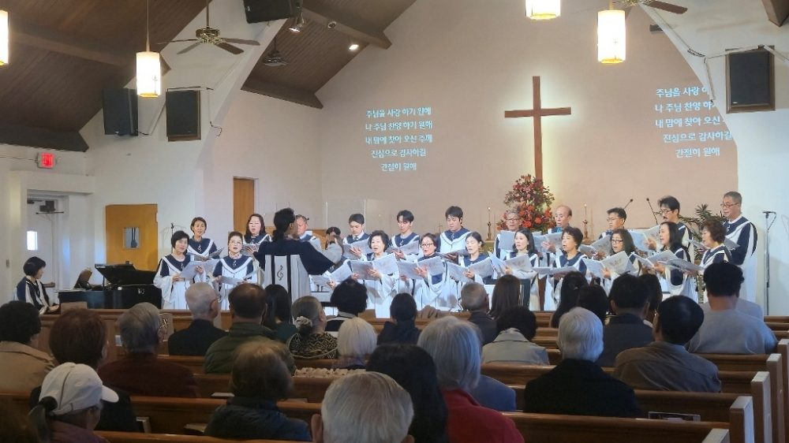
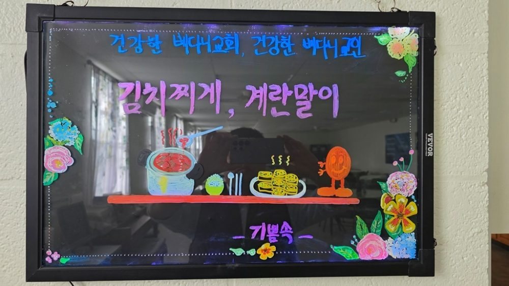
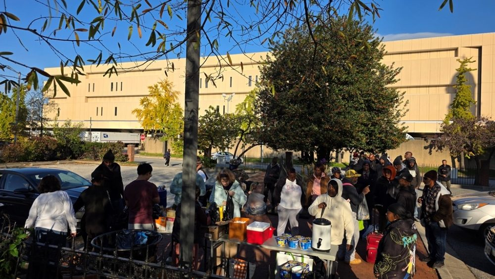

“저는 우리 베다니가 성도님들에게 또 하나의 무거운 짐이 되는 교회가 되지 않았으면 좋겠어요. 이건 제 진심이에요.”
박대성 목사 · 11월 8일 설교 중에서
3분 요약
살아 있는 교회는 어떤 교회일까요?
지난주 사데 교회를 향한 경고에 이어, 올해 13주년을 맞은 베다니가 10년, 20년 뒤에도 살아 있는 교회이려면 어떤 교회여야 하는지 에베소서 4장에서 세 가지로 살폈습니다.
1
그리스도 안에서 함께 자라는 교회
엡 4:13-15

11월 8일 주일 예배
교회의 머리는 목사도 장로님도 아닌 오직 예수 그리스도이십니다. 성장은 교인 수나 재정이 늘어나는 것이 아니라 예수님을 닮아 가는 것입니다. 들리는 말을 그대로 믿지 말고 말씀으로 분별하며, 진리와 사랑 안에서 서로 붙들어 주며 함께 자라 갑니다.
“교회에 다닌 세월만큼 여러분의 믿음도 성장하셨습니까?”
2
서로를 사랑으로 세워 주는 교회
엡 4:12, 16

주일 점심 메뉴판 (11월 1일)
직분은 몇몇 사람이 모든 일을 하라고 주신 것이 아니라, 성도를 세워 함께 그리스도의 몸을 이루게 하려는 것입니다. 꽃꽂이, 양초 갈기, 화장실 청소처럼 보이지 않는 수고를 하나님은 모두 기억하십니다(히 6:10). 오래 섬겨 온 분들의 헌신을 당연하게 여기지 말고 서로의 짐을 함께 나누어야 합니다. 교회는 지쳐 돌아가는 곳이 아니라, 힘을 얻어 다시 세상으로 나가는 영적 전초기지입니다.
“누군가의 시간과 땀과 수고가 있기 때문이에요.”
3
세상에서 그리스도의 사랑을 실천하는 교회
골 3:17

11월 11일 수요일, 볼티모어 다운타운 노숙인 섬김
교회에서 자란 믿음은 교회 문을 나서는 순간 사라지면 안 됩니다. “무엇을 하든지 말에나 일에나 다 주 예수의 이름으로 하고”(골 3:17), 일터와 가정과 이웃 가운데서도 그리스도인으로 살아야 합니다. 소금통 안의 소금은 제 역할을 할 수 없습니다. 내가 살아가는 자리가 선교의 현장입니다.